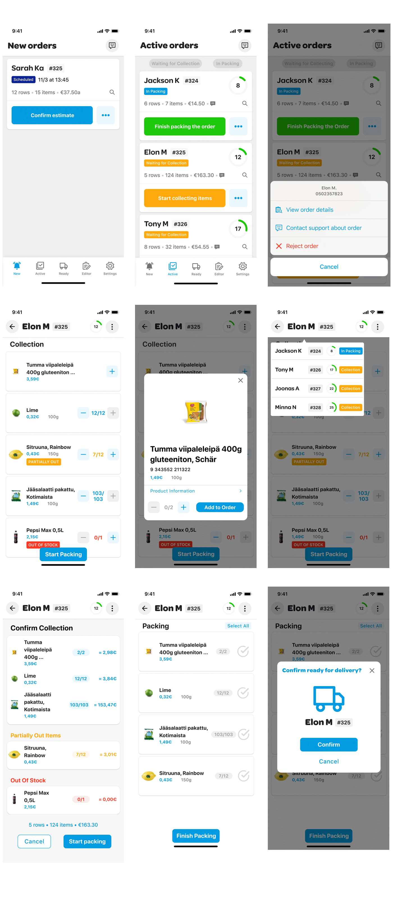

Wolt 2022: UI/UX Design Assignment
This is an assignment for Wolt UI/UX Designer role for Summer 2022. Task was to create a user interface for grocery stores for picking and collecting items that will be picked up by the couriers after.
Link to the Figma file and detailed instructions of the assignment